El Portal de procesos es el sistema de Century Mold para pedir y autorizar tiempo extra y transporte. Como Autorizador 2 tienes dos trabajos:
Dar la segunda firma del tiempo extra de toda la planta (y poder autorizar lo que ya venció).
Administrar usuarios y accesos: crear usuarios, restablecer contraseñas y dar o quitar roles.
Cómo camina una solicitud
Quien la pide (solicitante) la captura y la envía.
El jefe de su área (Autorización 1) la autoriza o la devuelve.
Tú (Autorización 2) das la segunda firma o la devuelves.
Recursos Humanos la confirma y genera el transporte para el proveedor.
El sistema no manda correos ni mensajes. Después de autorizar o devolver, avisa tú a la persona que sigue. Cada vez que este manual diga «avisa», es por eso.
Lo que puedes hacer
Ver y firmar en nivel 2 lo de todas las áreas, en Por autorizar.
Capturar tu propio tiempo extra; lo que tú envías queda autorizado al instante.
Autorizar fuera de tiempo lo que venció, con un motivo.
Consultar todas las solicitudes con filtros y bajarlas en Excel.
Crear usuarios (uno por uno o en lote), restablecer contraseñas y activar o desactivar.
Dar y quitar los roles Recursos Humanos y Nóminas, y asignar Autorizador 1 y Solicitante por área y con fechas.
Ver el organigrama de la planta y la lista del personal elegible.
Lo que NO puedes hacer
Firmar lo que tú mismo creaste en el nivel de revisión (tu captura ya queda autorizada al enviarla).
Dar el rol Autorizador 2 o Administrador: solo lo da un administrador.
Restablecer la contraseña de un Recursos Humanos, de un administrador o la tuya.
Cambiar tu propio rol ni darte a ti mismo el rol de Nóminas.
Confirmar el envío al proveedor, cancelar solicitudes o bajar el Formato de rutas: eso es de Recursos Humanos.
Editar el padrón de empleados, la estructura, los catálogos ni los reportes de nómina.
2. Primeros pasos
Entrar al portal
Abre https://centurymold-qro.web.app en tu navegador (Chrome, Edge o el de tu celular).
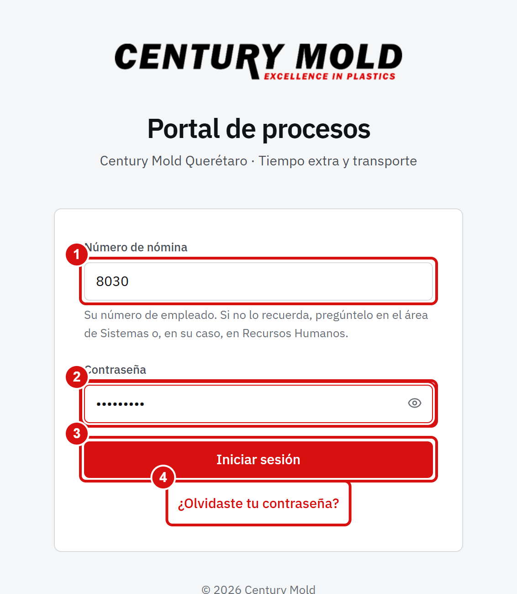
Escribe tu número de nómina.
Escribe tu contraseña. El ojito sirve para ver lo que escribes.
Toca Iniciar sesión.
Si no la recuerdas, toca ¿Olvidaste tu contraseña?. Solo se restablece en persona, con Sistemas o Recursos Humanos y tu identificación.
La primera vez que entras con una contraseña temporal, el portal te pide crear una contraseña nueva: mínimo 8 caracteres, con letras y números.
Tu pantalla de inicio
Al entrar ves tu Inicio: un resumen de la planta y lo que espera tu firma.
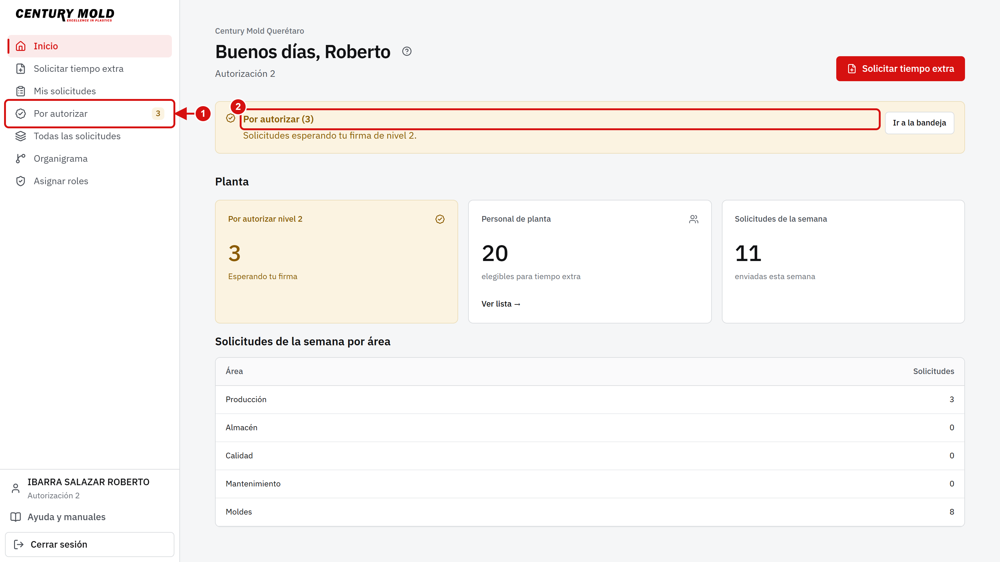
Por autorizar en el menú trae un número: cuántas solicitudes esperan tu firma.
Ir a la bandeja abre esa lista.
Personal de planta dice cuántos empleados son elegibles para tiempo extra; Ver lista los muestra.
La tabla cuenta las solicitudes de la semana por área.
El menú
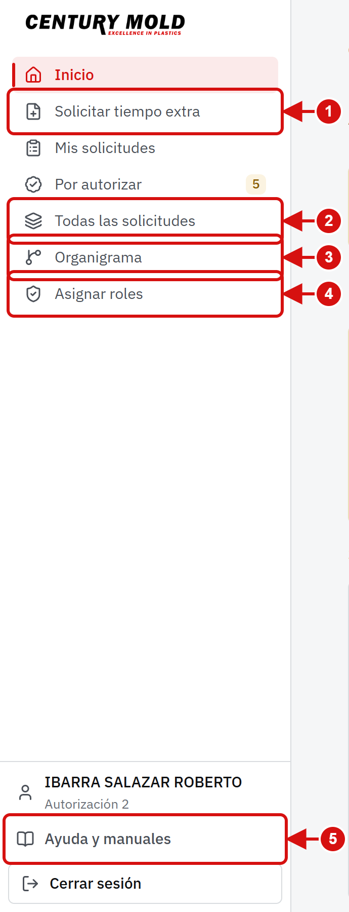
Solicitar tiempo extra y Mis solicitudes: para capturar el tuyo.
Todas las solicitudes: la consulta de toda la planta.
Organigrama: quién autoriza y quién captura en cada área.
Asignar roles: Usuarios y accesos.
Ayuda y manuales (abajo): este manual y su guía rápida en PDF, con «Descargar PDF». Abajo también está Cerrar sesión.
Mi cuenta
Tu nombre, abajo en el menú, abre Mi cuenta.
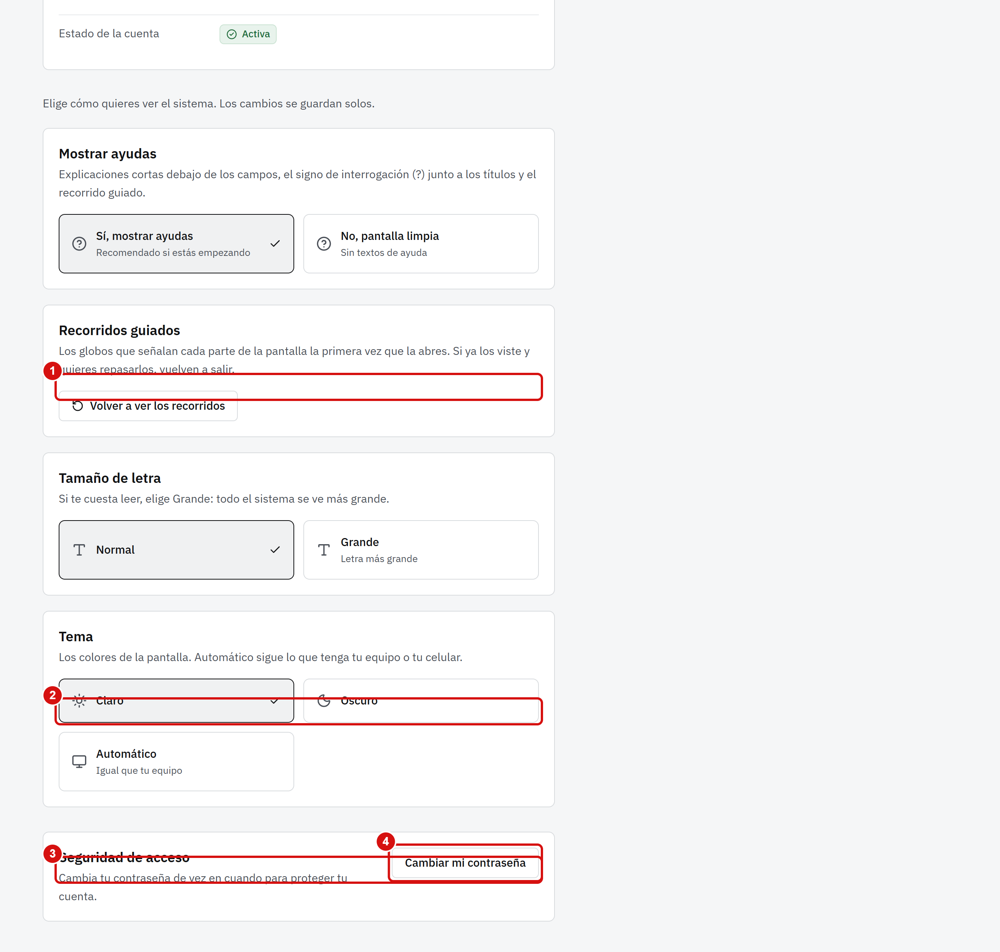
Mostrar ayudas: los textos de ayuda y los recorridos guiados.
Tamaño de letra: Normal o Grande.
Tema: Claro, Oscuro o Automático (igual que tu equipo).
Cambiar mi contraseña.
Por seguridad, la sesión se cierra sola a los 30 minutos sin usar el portal. Entra de nuevo; lo que ya firmaste no se pierde. En una computadora compartida, cierra tu sesión al terminar.
3. Por autorizar: tu bandeja
Para qué sirve. Aquí están las solicitudes que ya firmó el jefe de área y esperan tu firma, de todas las áreas. Cuándo se usa: todos los días.
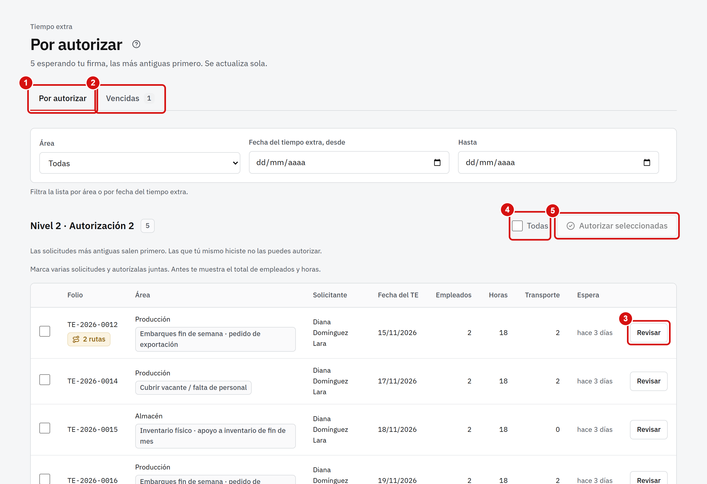
La pestaña Por autorizar es lo que espera tu firma.
Vencidas: las que ya pasaron de fecha (más adelante).
Revisar abre la solicitud completa.
Todas marca todas las casillas.
Autorizar seleccionadas firma varias juntas.
Cada renglón trae el folio, el área, los motivos, quién la pidió, la fecha del tiempo extra, cuántos empleados y horas, cuántos van con transporte y cuánto tiempo lleva esperando. Las más antiguas salen primero. Una insignia 2 rutas (o más) significa que hay empleados en rutas distintas: cada ruta extra cuesta, así que revisa la justificación.
Filtrar la lista
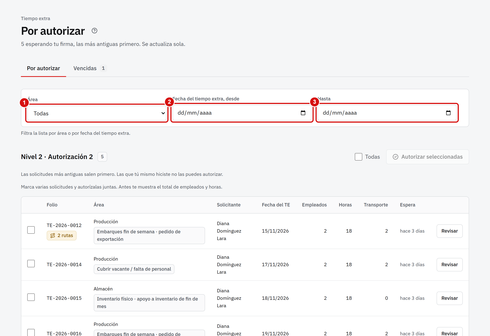
Área: ver solo una.
Fecha del tiempo extra, desde.
Hasta.
Los filtros solo cambian lo que ves; no cambian ninguna solicitud. La lista se actualiza sola cuando alguien firma, devuelve o envía.
4. Revisar una solicitud, parte por parte
Toca Revisar. Se abre la solicitud completa; léela de arriba abajo antes de decidir.
Arriba: los datos generales
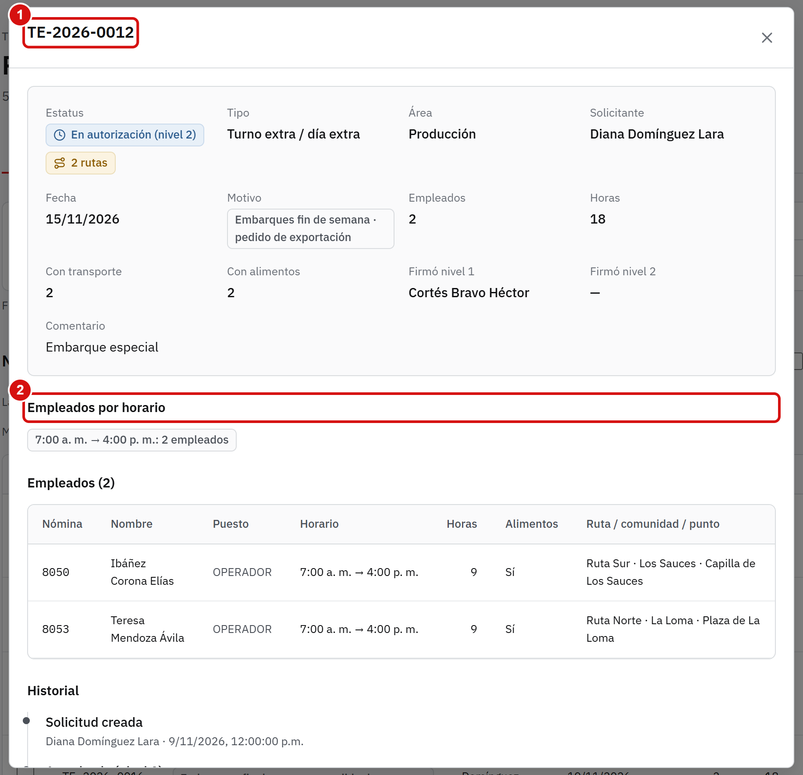
El folio (por ejemplo TE-2026-0012) identifica la solicitud. Dentro verás el estatus, el tipo (turno extra o extensión de turno), el área, quién la pidió, la fecha, los motivos, cuántos empleados y horas, cuántos con transporte y con alimentos, y quién firmó el nivel 1.
Empleados por horario resume cuántas personas entran a cada horario.
El comentario explica para qué se necesita. Los motivos dicen por qué: si es «Cargo a P.O.» o TB, trae el número; el detalle añade una frase corta.
En medio: los empleados
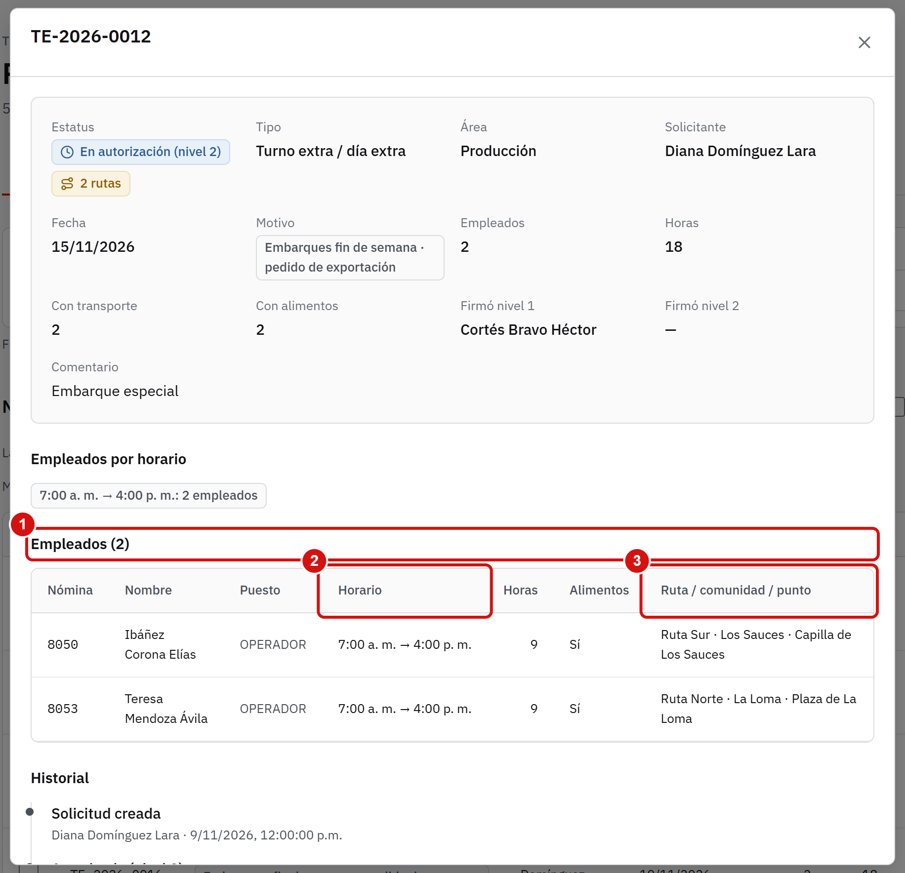
Empleados (n): la lista, con nómina, nombre y puesto.
Horario: entrada y salida. Si termina después de medianoche lo dice, por ejemplo «12:00 a. m. (medianoche)» y «Termina: … (día siguiente)».
Ruta / comunidad / punto: dónde lo recoge el transporte, o «Sin transporte».
Fíjate en los horarios que cruzan la medianoche y en quién va sin transporte: son lo que más se corrige después.
Abajo: historial y decisión
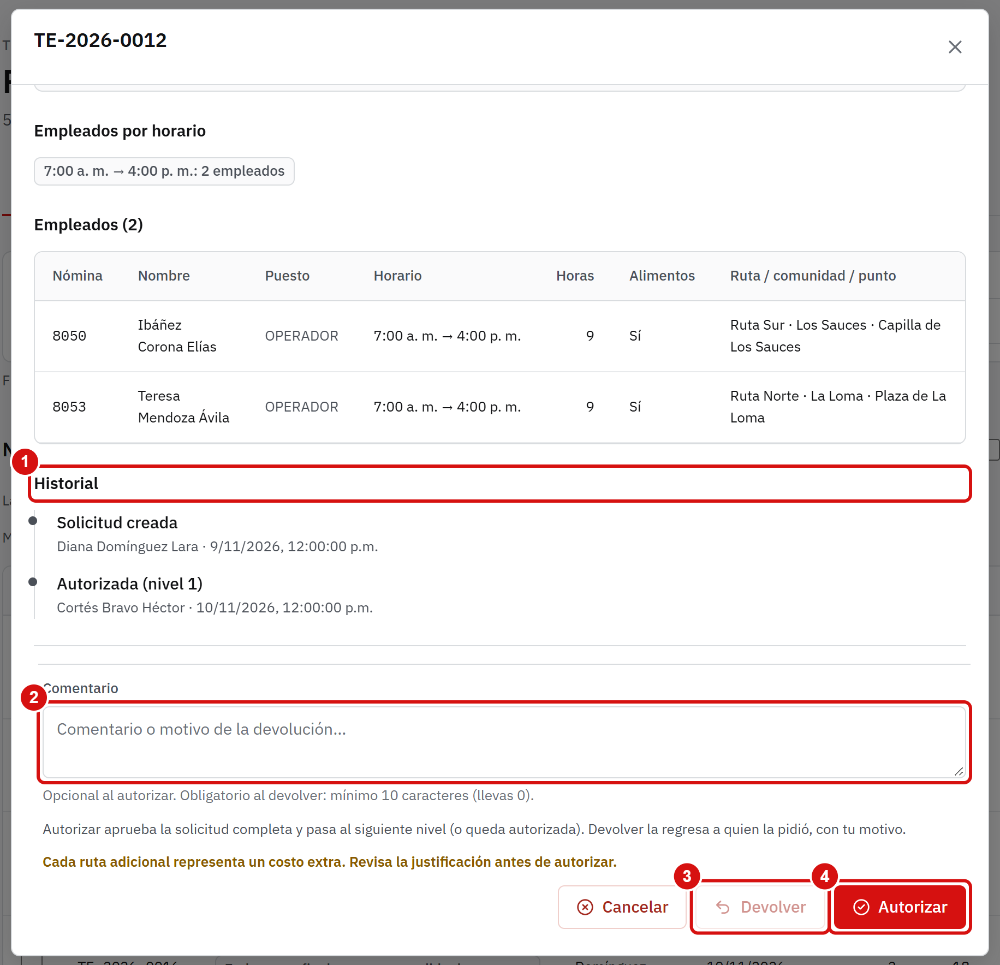
Historial: quién hizo qué y cuándo (creada, autorizada nivel 1, devuelta, etc.), con los comentarios.
Comentario: opcional al autorizar, obligatorio al devolver (mínimo 10 letras).
Devolver: regresa la solicitud con tu motivo.
Autorizar: da tu firma.
5. Autorizar
Para qué sirve. Tu firma de nivel 2 es la última: después solo falta que Recursos Humanos la confirme. Cuándo se usa: cuando la solicitud está bien.
Revisa la solicitud (sección anterior).
Si quieres, escribe un comentario.
Toca Autorizar.
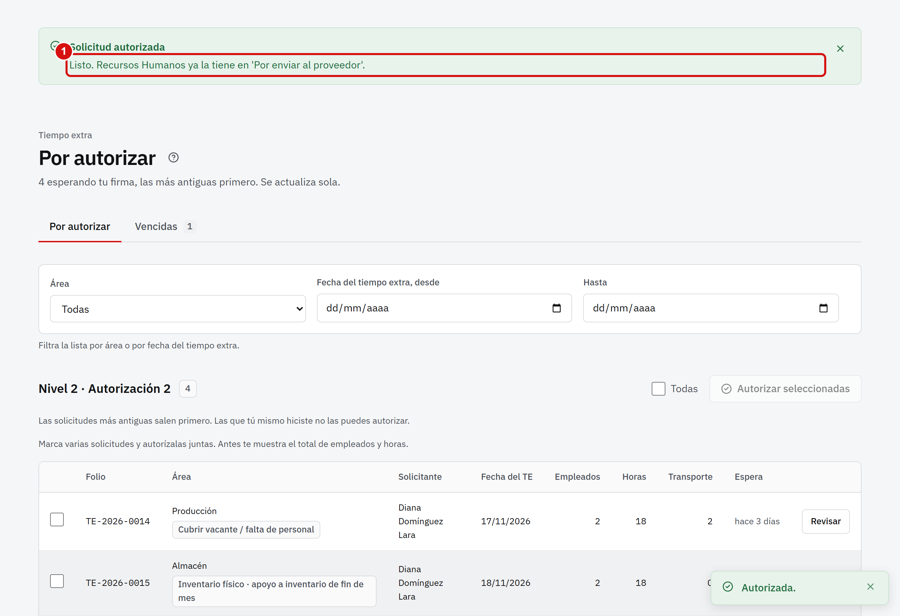
El aviso confirma la firma. La solicitud pasa a Autorizada y Recursos Humanos ya la ve en Por enviar al proveedor.
Qué pasa después. Su estatus es Autorizada y entra, para la semana que le toca, al formato de nómina. Avisa a Recursos Humanos si es urgente (por ejemplo, si el tiempo extra es hoy o mañana y el transporte debe salir pronto).
Si otra persona respondió la misma solicitud mientras la tenías abierta, el portal te avisa («Alguien más ya respondió esta solicitud»): no se firma dos veces. Cierra y revisa la lista.
6. Devolver una solicitud
Para qué sirve. Regresar una solicitud a quien la capturó para que la corrija. Cuándo se usa: si hay un error de horarios, empleados, motivo, transporte o rutas.
El motivo es obligatorio. Mientras no escribas al menos 10 letras, el botón Devolver está apagado.
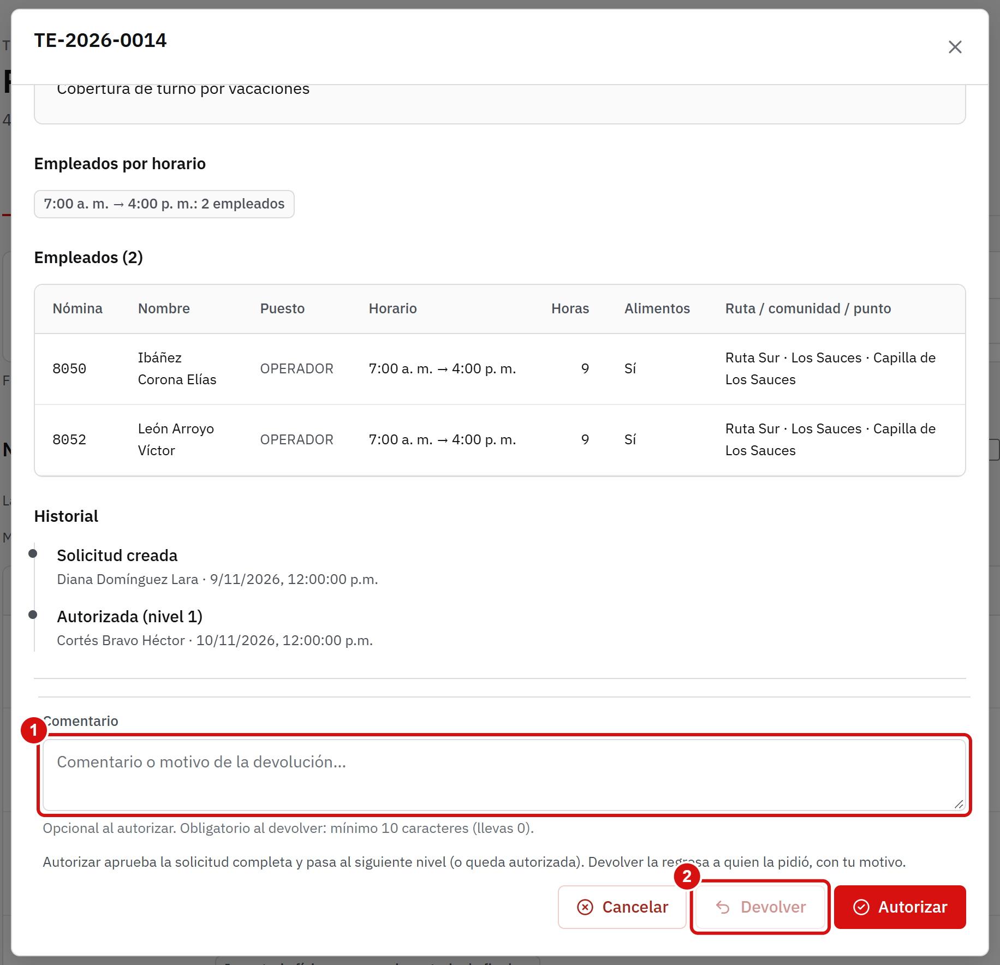
Escribe qué debe corregir en Comentario.
Devolver sigue apagado hasta que el comentario tenga 10 letras.
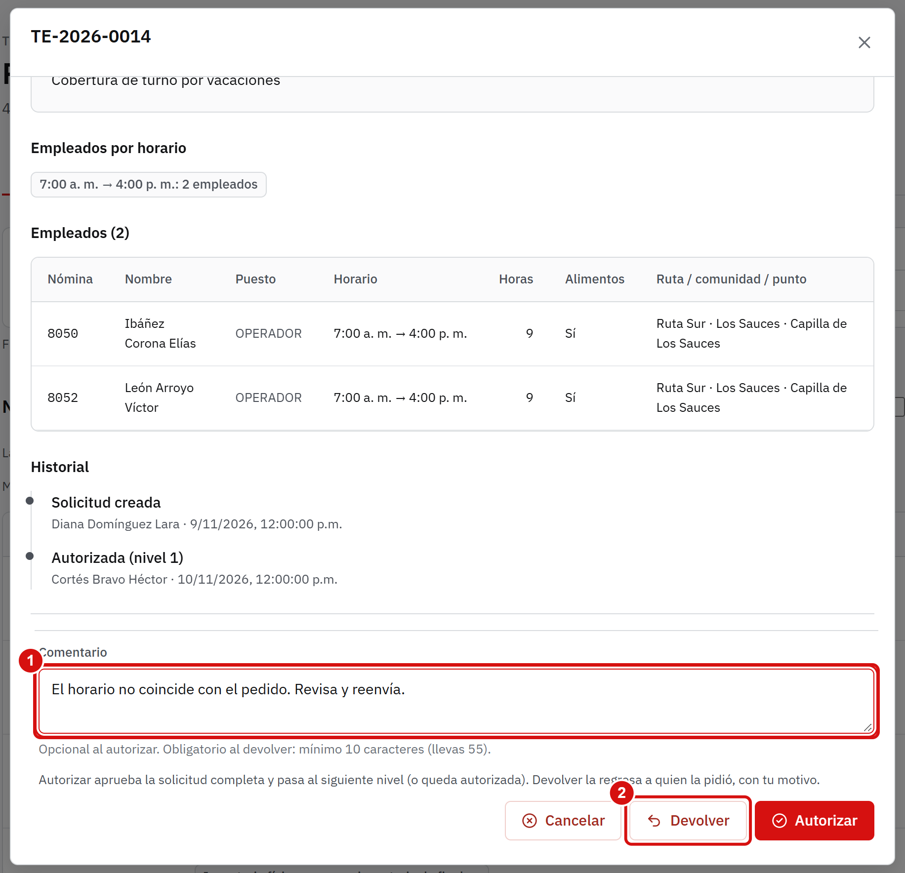
Escribe un motivo claro: qué está mal y cómo corregirlo.
Toca Devolver.
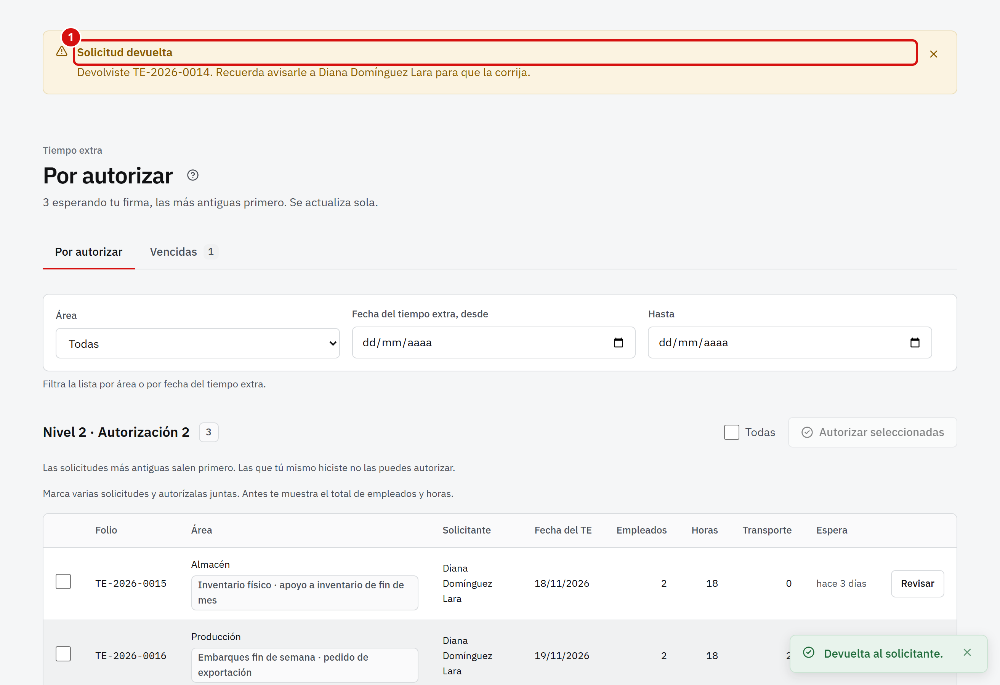
El aviso confirma la devolución. Avisa a quien capturó para que la corrija: el portal no lo hace.
Qué pasa después. Su estatus es Devuelta y regresa a quien la pidió, con tu motivo. Al corregirla y reenviarla, vuelve a empezar desde el nivel 1 con el mismo folio; el jefe de área la firma otra vez y luego te llega a ti.
7. Autorizar varias a la vez
Para qué sirve. Firmar de un golpe varias solicitudes que ya revisaste. Cuándo se usa: cuando hay muchas y estás seguro de todas.
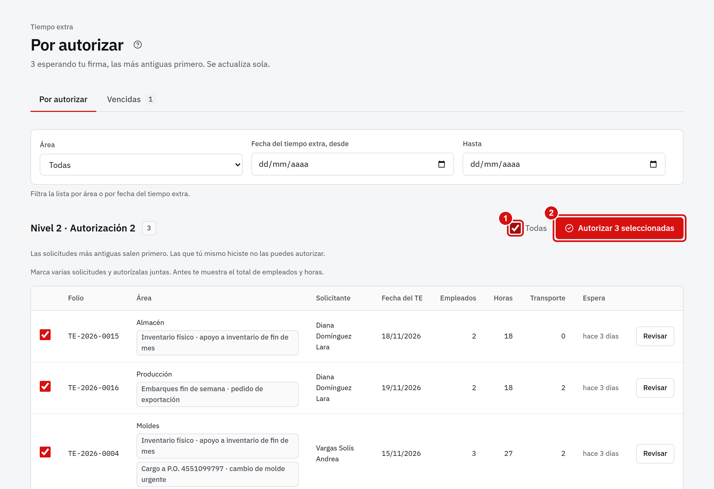
Marca la casilla de cada solicitud (o Todas).
Toca Autorizar seleccionadas.
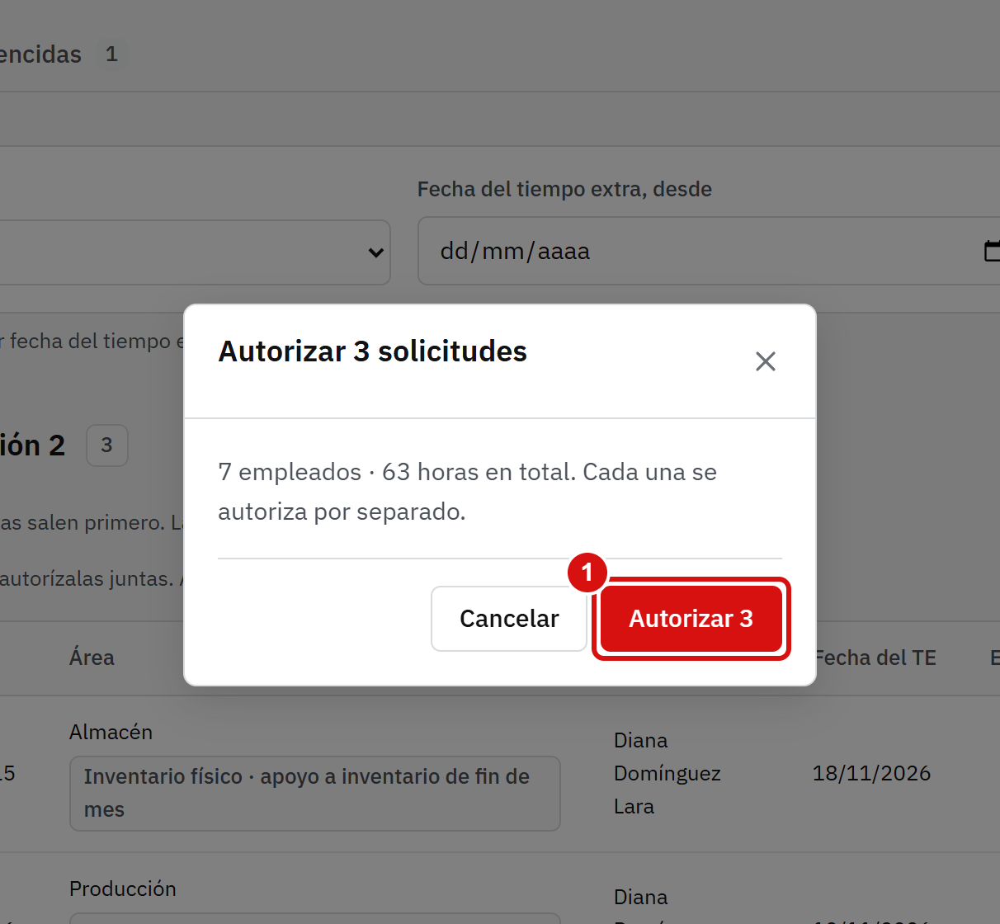
El portal te muestra el total de empleados y horas que vas a firmar. Revisa y confirma con el botón.
Cada solicitud se firma por separado. Si alguna ya la había respondido otra persona, esa se salta y el resultado te dice cuáles sí se autorizaron.
Antes de firmar muchas juntas, abre al menos las que tengan 2 rutas o muchas horas: un error aquí se repite en todas.
8. Capturar tu propio tiempo extra
Tú también puedes pedir tiempo extra. Cómo se arma la solicitud es igual que en el manual del Solicitante (fecha, motivos, empleados, horarios, transporte, comentario y envío); revísalo en Ayuda y manuales. Aquí solo está lo que cambia para ti.
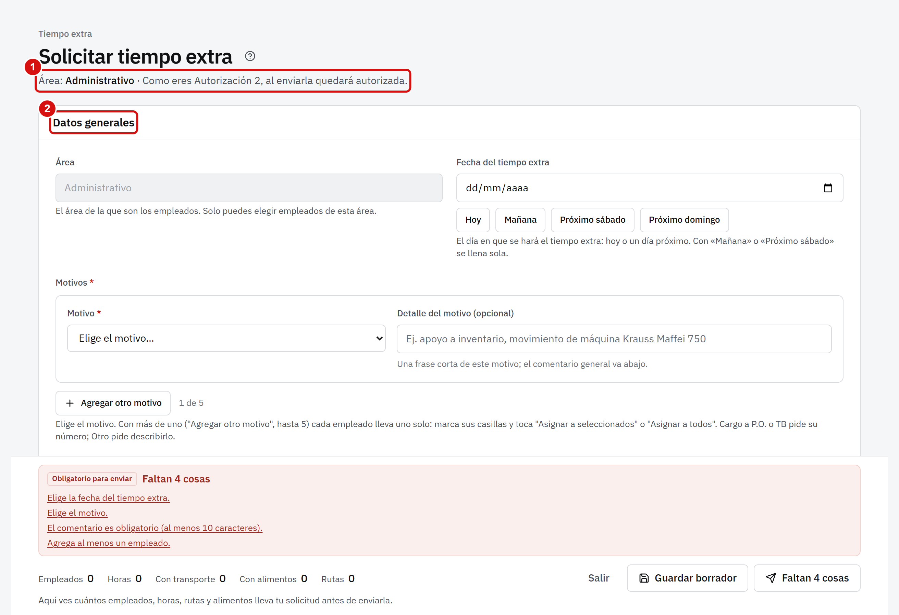
Al abrir Solicitar tiempo extra, el área sale como Administrativo. Si además eres solicitante o Autorizador 1 de otra área, puedes elegirla.
El aviso de arriba lo dice: «Como eres Autorización 2, al enviarla quedará autorizada».
Qué cambia
Se autoriza sola. Al enviar, tu solicitud queda Autorizada en el mismo paso, con tu firma de nivel 2 («Capturada y autorizada por Aut. 2»). No pasa por el jefe de área.
Va directo a Por enviar al proveedor, donde Recursos Humanos la confirma.
Como no se puede firmar lo que uno mismo creó, tu solicitud no aparece en tu bandeja de Por autorizar.
En un área distinta de Administrativo solo puedes capturar si tienes en ella una asignación de solicitante o de Autorizador 1.
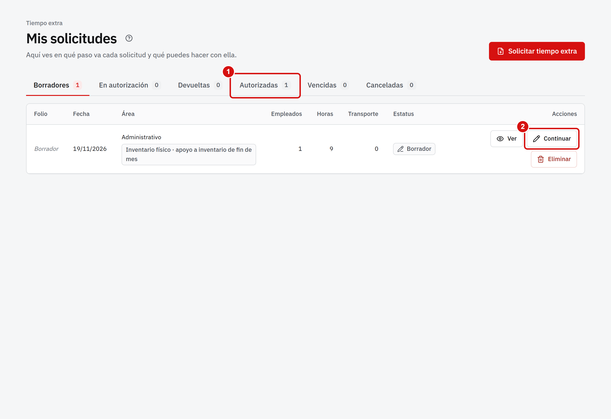
Mis solicitudes agrupa lo tuyo por pestañas (Borradores, En autorización, Devueltas, Autorizadas, Vencidas, Canceladas). En Autorizadas están las que enviaste y se firmaron solas.
Continuar retoma un borrador.
Como tu captura queda autorizada sin que nadie más la revise, verifica tú los empleados, horarios y transporte antes de enviar.
9. Vencidas: autorizar fuera de tiempo
Para qué sirve. Una solicitud vence cuando pasa el día del tiempo extra sin terminar de autorizarse. Ya nadie la firma de la forma normal. Si de verdad se trabajó, solo tú puedes autorizarla fuera de tiempo. Cuándo se usa: de vez en cuando, cuando se reporta tiempo extra que no se alcanzó a firmar.
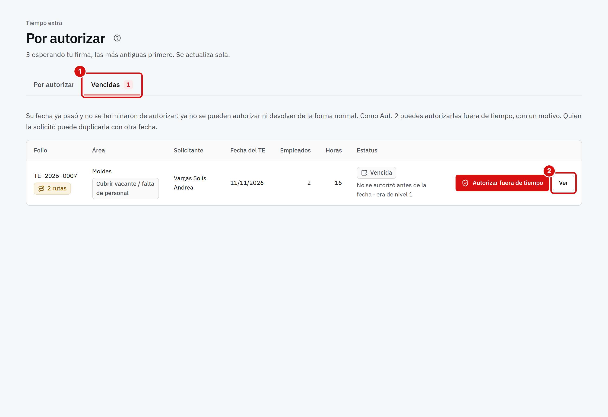
Entra a Por autorizar y abre la pestaña Vencidas.
Revisar abre la solicitud.
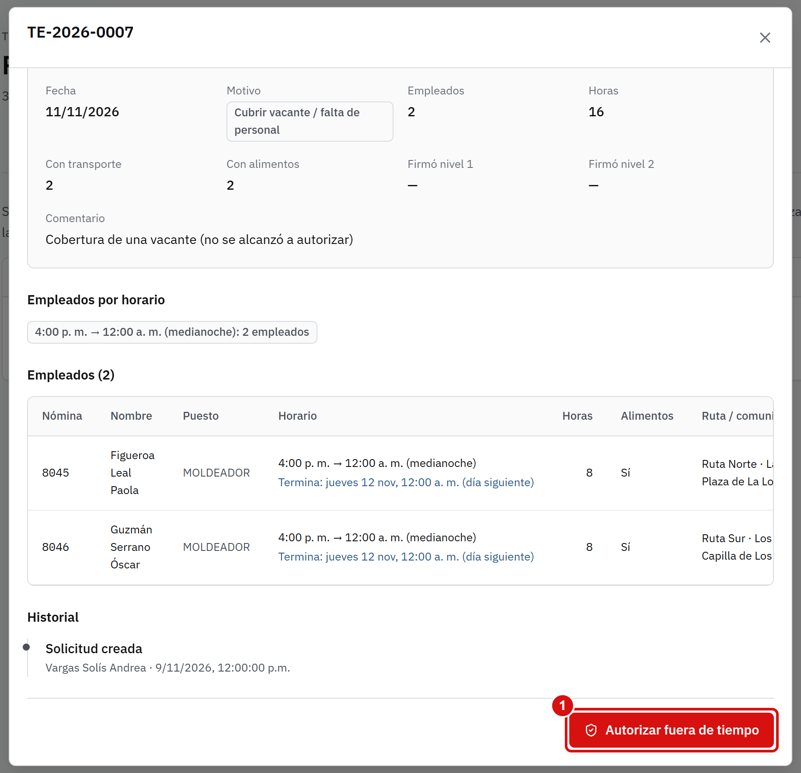
Revisa que sea cierto: empleados, horas y fecha. Toca Autorizar fuera de tiempo.
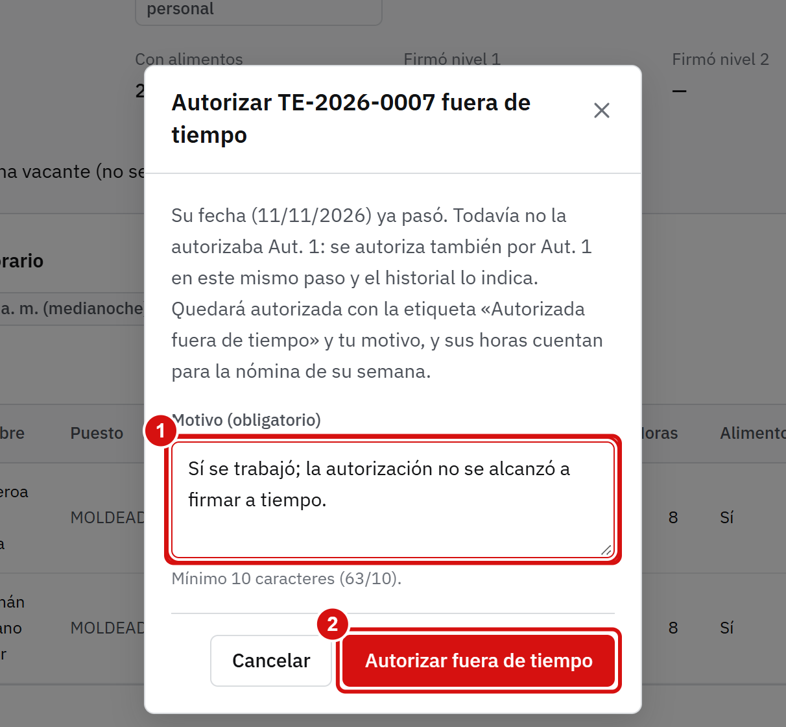
Escribe el motivo (de 10 a 500 letras): por qué se autoriza ahora.
Toca el botón para confirmar.
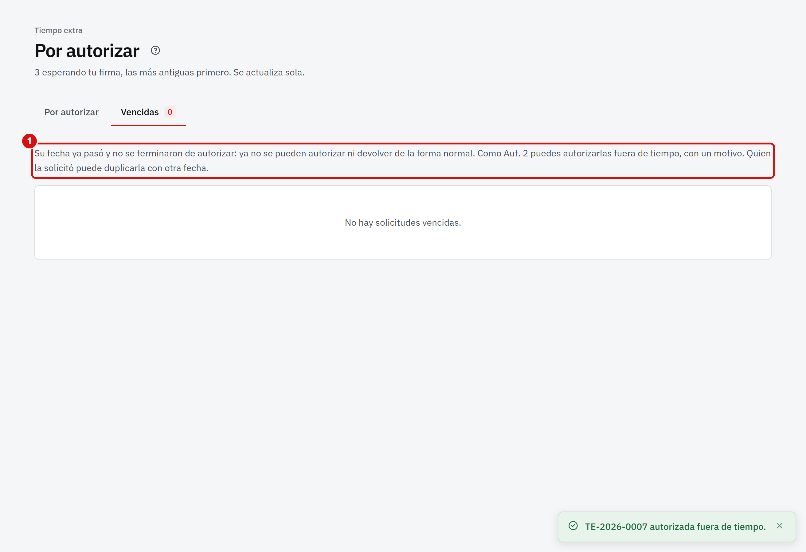
El aviso confirma que quedó autorizada fuera de tiempo.
Qué pasa después
Queda Autorizada, con tu nombre, la fecha y tu motivo. En Todas las solicitudes se marca como «Fuera de tiempo» (hay filtro).
Si venía del nivel 1 sin la firma del jefe de área, queda anotado que la autorizó Autorización 2.
Entra al formato de nómina de su semana. Si Nóminas ya firmó esa semana, el portal te avisa antes de confirmar: no se agrega sola al formato firmado, hay que pedir a Recursos Humanos que reabra el área.
Avisa a Recursos Humanos: como la fecha ya pasó, el transporte ya no se pide (se cierra «sin transporte») y sus horas siguen contando para nómina.
Lo que NO puedes hacer
Autorizar fuera de tiempo una borrador o una devuelta vencida: se duplican con otra fecha desde Mis solicitudes (lo hace quien las capturó).
Autorizar fuera de tiempo lo que tú mismo creaste.
10. Todas las solicitudes (consulta)
Para qué sirve. Ver toda la planta en una sola pantalla, en cualquier estatus (menos los borradores de otras personas). Es de solo lectura: para firmar o devolver usa Por autorizar. Cuándo se usa: para saber dónde va una solicitud, quién firmó, o armar un reporte.
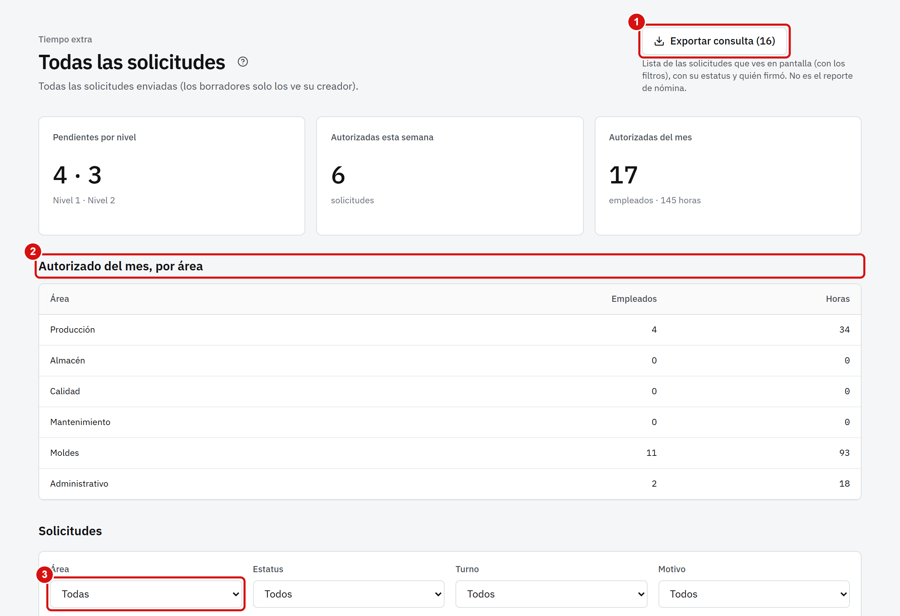
Exportar consulta (n) baja a Excel lo que ves en pantalla, con los filtros puestos.
Los resúmenes de arriba: pendientes por nivel, autorizadas esta semana y autorizado del mes por área (empleados y horas).
Área y los demás filtros.
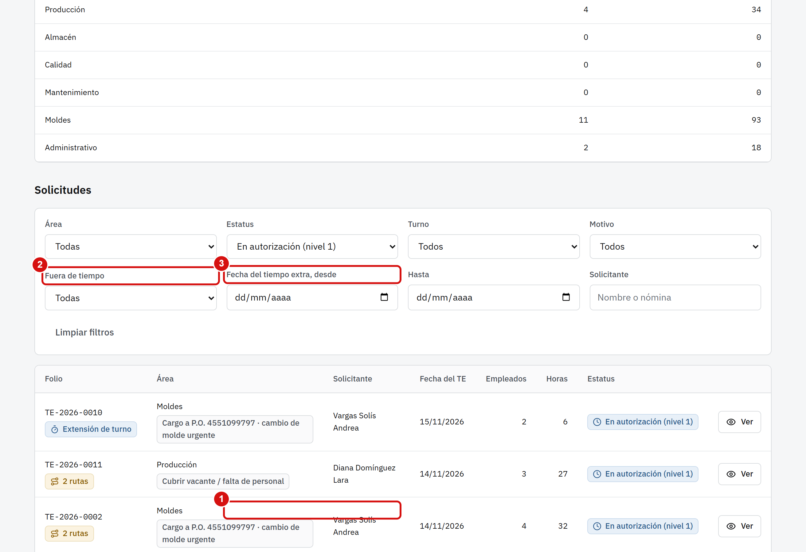
Estatus: por ejemplo En autorización nivel 1, Vencida, Cancelada.
Fuera de tiempo: solo las que se autorizaron así.
Fecha del tiempo extra, desde y hasta. También hay Turno, Motivo, Solicitante, Nombre o nómina y Folio.
Si escribes un folio o una nómina, la lista se acorta. Limpiar filtros los quita todos.
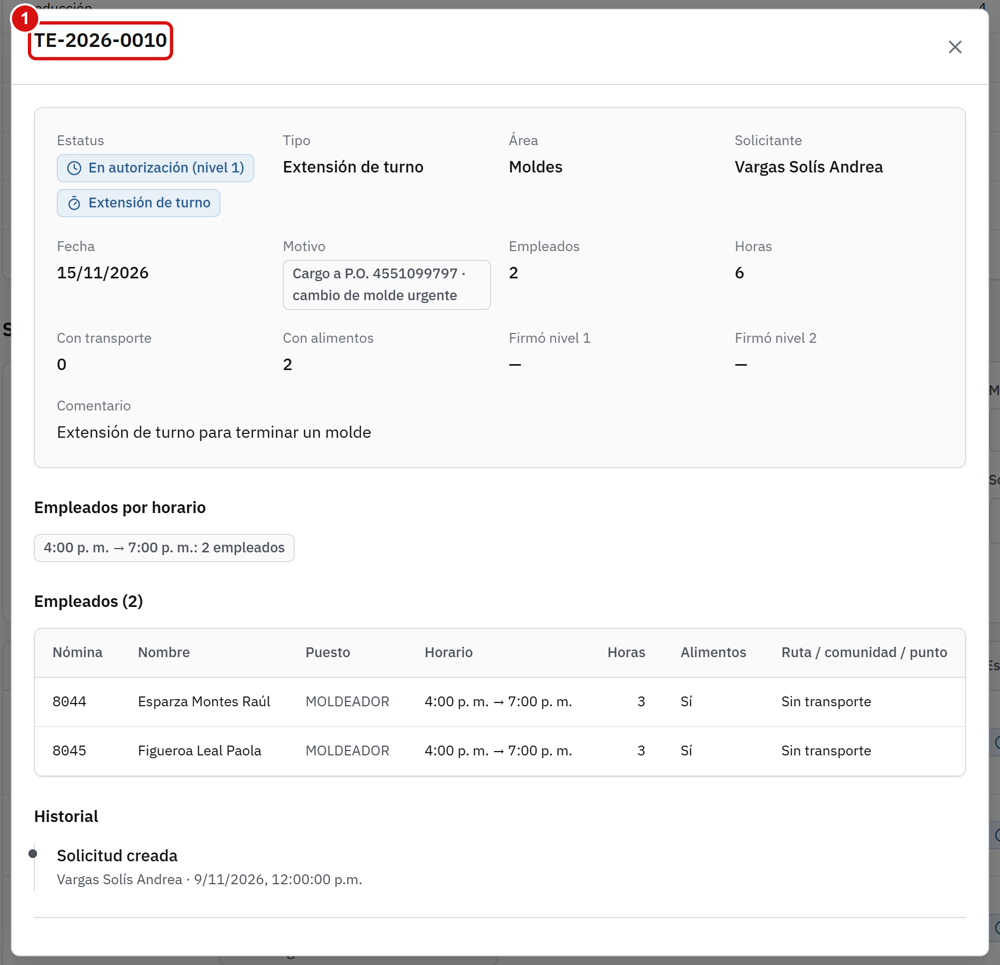
Ver abre el detalle de la solicitud: lo mismo que en tu bandeja, pero sin botones de firma.
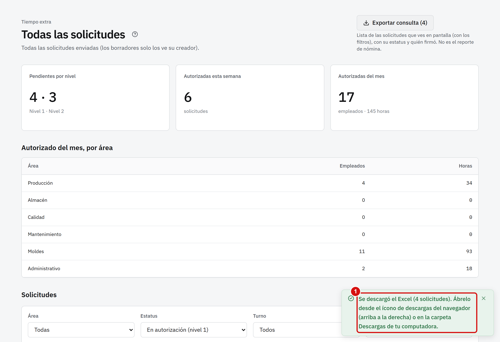
Al terminar de descargar, el portal te dice qué archivo bajó. Ábrelo desde el ícono de descargas del navegador o en la carpeta Descargas.
El Excel de la consulta es una lista de lo que ves, con estatus y quién firmó. No es el reporte de nómina: ese lo prepara Nóminas.
11. Usuarios y accesos: usuarios
Para qué sirve. Cada persona entra con su número de nómina y una contraseña. Aquí das de alta a las personas, les cambias el rol y restableces su contraseña. Cuándo se usa: de vez en cuando: cuando entra alguien, cambia de puesto u olvida su contraseña. Se entra por Asignar roles en el menú, pestaña Usuarios.
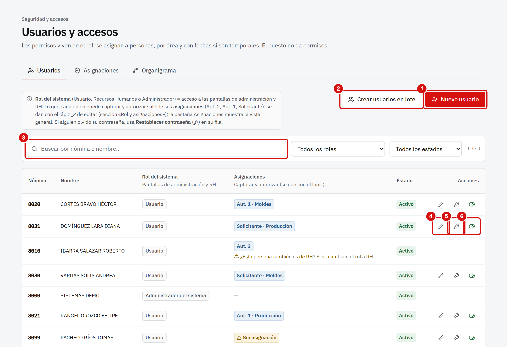
Nuevo usuario: crea uno.
Crear usuarios en lote: varios a la vez.
El buscador filtra por nómina o nombre; también hay filtros de rol y de estado.
El lápiz ✎ edita: nombre, rol del sistema y asignaciones.
La llave 🔑 restablece la contraseña.
El ojo activa o desactiva (una persona desactivada ya no puede entrar).
La tabla trae dos columnas distintas, y conviene no confundirlas:
Rol del sistema: Usuario, Recursos Humanos, Nóminas o Administrador. Abre pantallas de administración y RH.
Asignaciones: Autorización 2, Autorización 1 o Solicitante, por área y con fechas. Eso es lo que permite capturar y autorizar.
Sin asignación, una persona solo ve su Inicio y su cuenta. El puesto no da permisos: los permisos salen del rol y de las asignaciones. Si ves el aviso «¿Esta persona también es de RH? Si sí, cámbiale el rol a RH», es porque tiene una asignación pero su rol del sistema es «Usuario».
Crear un usuario
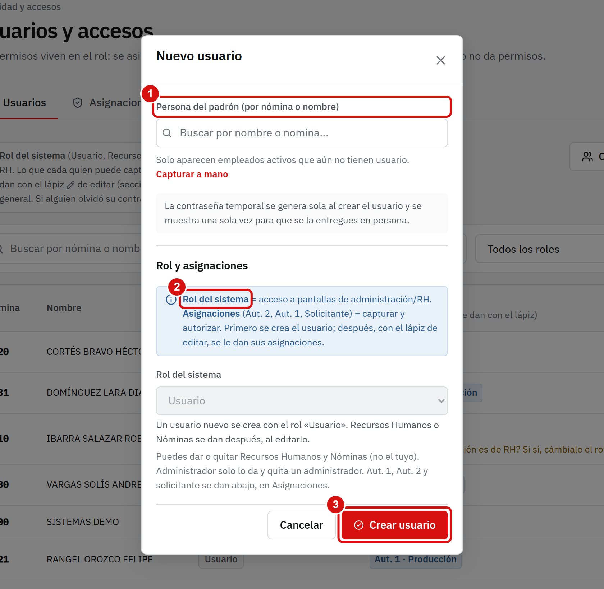
Busca a la persona por nómina o nombre en el padrón. Solo salen empleados activos que aún no tienen usuario.
Verás el Rol del sistema: un usuario nuevo siempre se crea como «Usuario»; RH o Nóminas se dan después, al editarlo.
Toca Crear usuario. La contraseña temporal se genera sola.
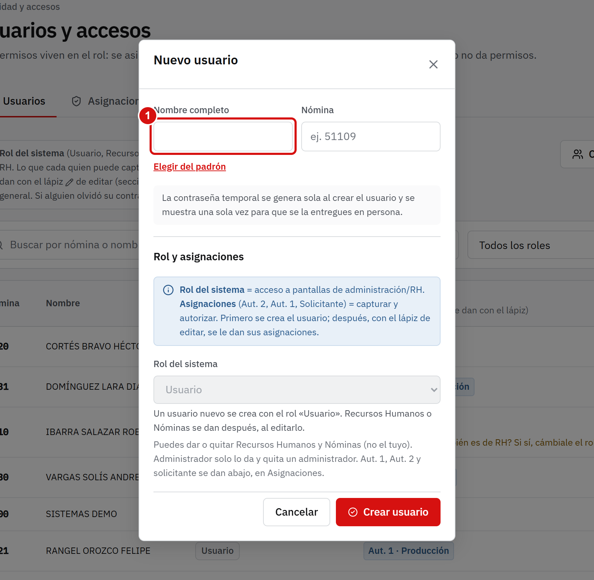
Si la persona no está en el padrón, toca Capturar a mano y escribe nómina y nombre. Avisa a Recursos Humanos para que la den de alta en el padrón.
La contraseña temporal
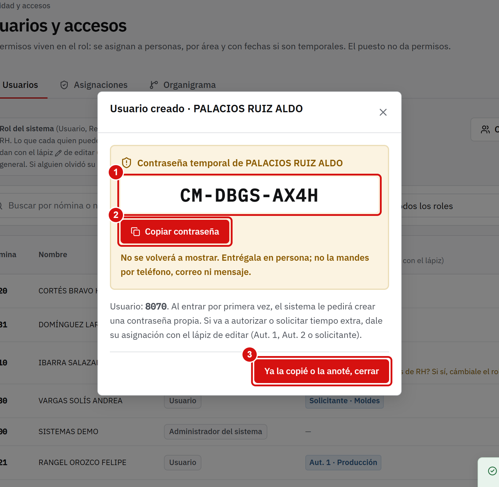
Esta es la contraseña temporal. Se ve una sola vez.
Copiar contraseña, o anótala.
Cuando ya la copiaste o la anotaste, toca Ya la copié o la anoté, cerrar.
Entrégala en persona, nunca por teléfono, correo ni mensaje. Al entrar por primera vez, la persona debe crear una contraseña propia. Si cierras sin copiarla, no se puede volver a ver: tendrás que restablecerla.
Crear varios en lote
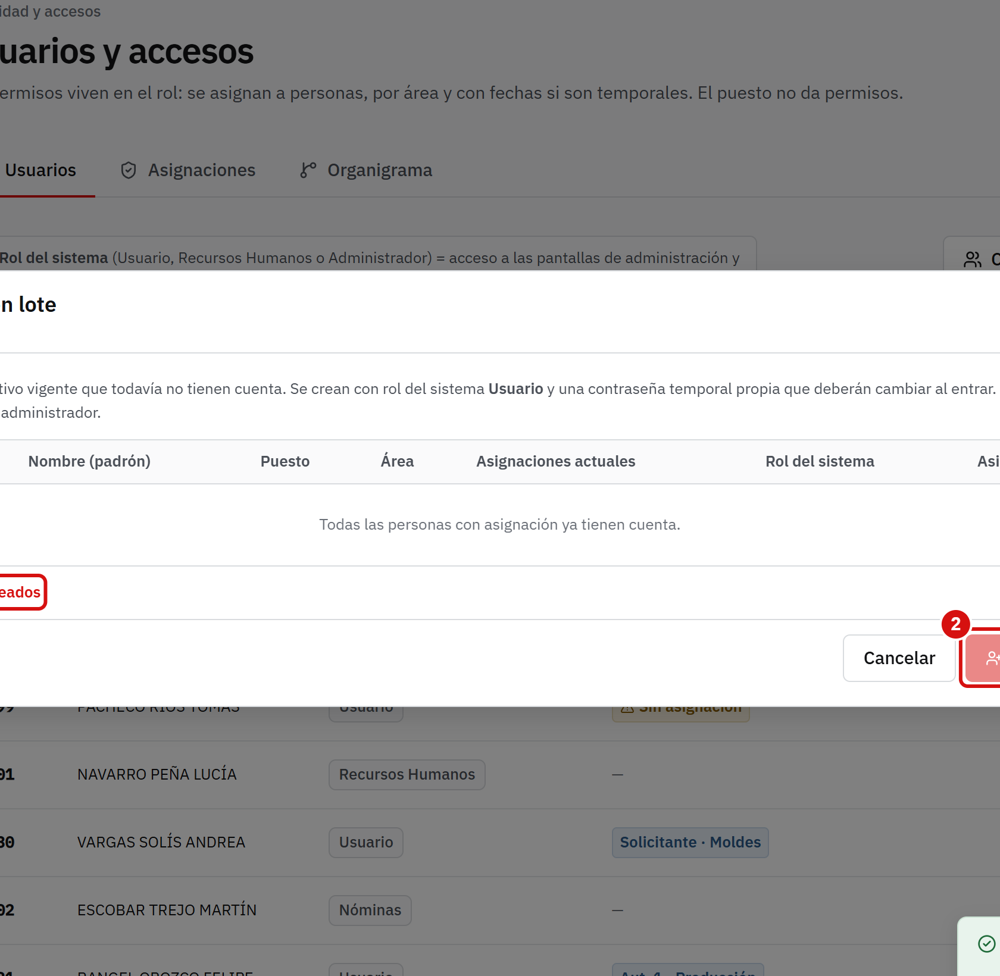
La lista trae a las personas con asignación vigente (Aut. 1, Solicitante) que todavía no tienen usuario: nómina, nombre, puesto, área y su asignación. Marca a quienes quieres. Agregar otros empleados busca a alguien más en el padrón.
El botón de abajo dice Crear n cuentas (n = las que marcaste).
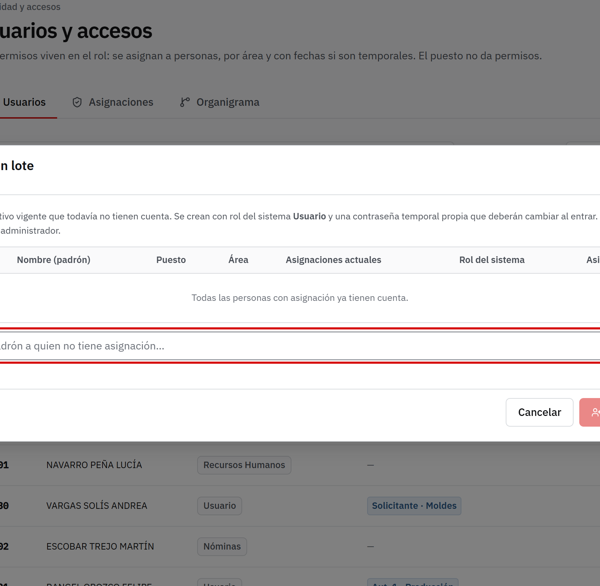
Busca y elige a los empleados. Toca Listo para volver a la lista y revisarla.
Todas se crean con el rol del sistema «Usuario»; RH o Nóminas se dan después con el lápiz. Al terminar, el portal baja un archivo de Excel con los accesos (nómina, nombre y contraseña temporal de cada persona). Esas contraseñas solo existen mientras la ventana está abierta: si la cierras antes de descargar el archivo, el portal te pregunta «¿Ya descargaste el archivo?». Guarda el Excel en un lugar seguro, entrega cada contraseña en persona a su dueño y borra el archivo cuando termines.
12. Editar un usuario y dar roles
Para qué sirve. Cambiar el nombre o el rol del sistema de alguien, y darle o quitarle permisos de captura y autorización. Se hace con el lápiz ✎ de la fila.
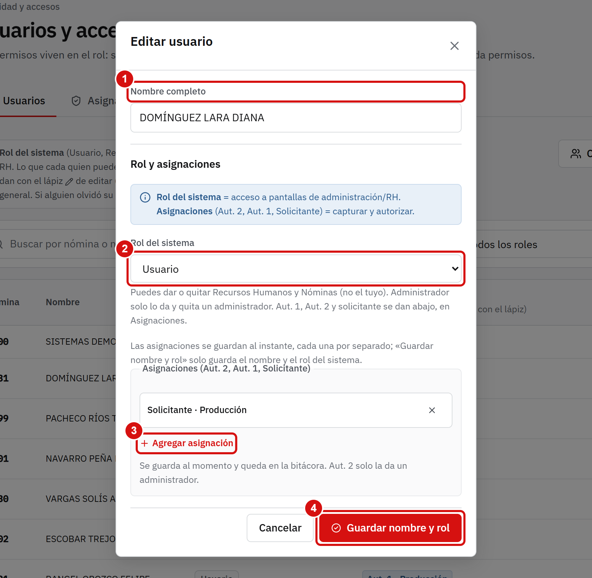
Nombre completo.
Rol del sistema: Usuario, Recursos Humanos o Nóminas.
Agregar asignación: Autorización 1 o Solicitante.
Guardar nombre y rol solo guarda el nombre y el rol del sistema. Las asignaciones se guardan al instante, cada una por separado.
Dar una asignación (Aut. 1 o Solicitante)
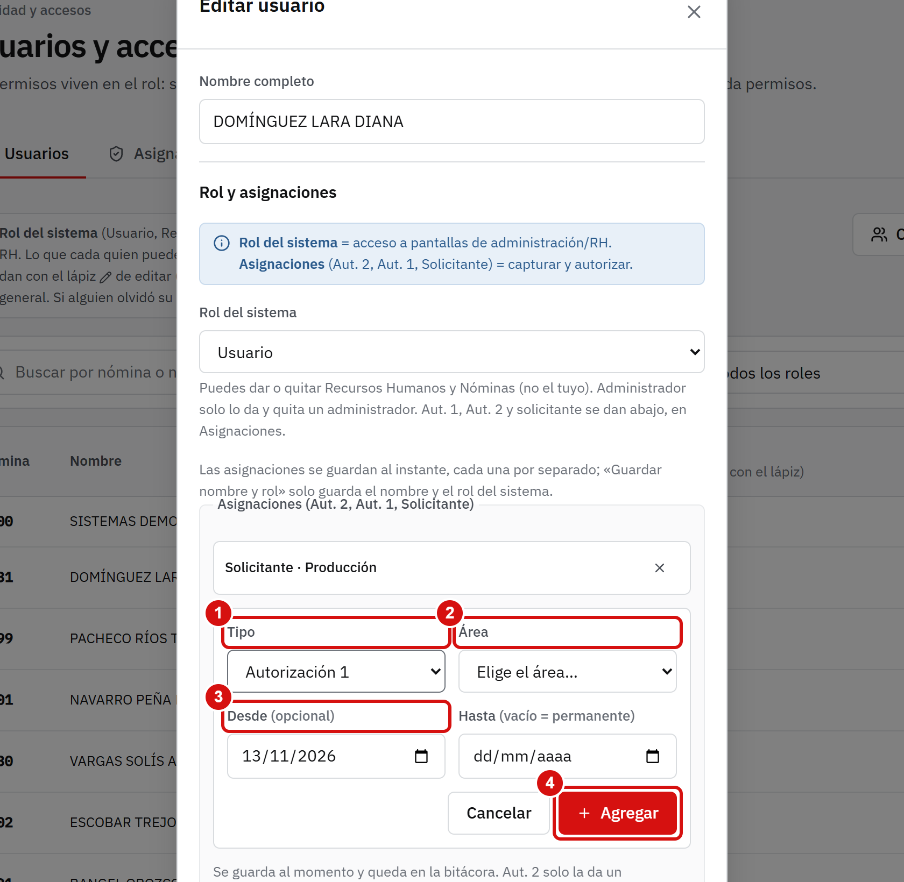
Tipo: Autorización 1 (firma el nivel 1 de un área) o Solicitante (captura).
Área: en cuál.
Desde (y Hasta): vacío en «Hasta» significa permanente. Úsalo para suplencias.
Agregar. Queda en la bitácora.
Las áreas que no participan en tiempo extra (como Administrativo) no se pueden asignar. Autorización 2 no aparece en esta lista porque la da un administrador.
Dar o quitar Recursos Humanos o Nóminas
En Rol del sistema elige Recursos Humanos o Nóminas y toca Guardar nombre y rol. El portal pide confirmación.
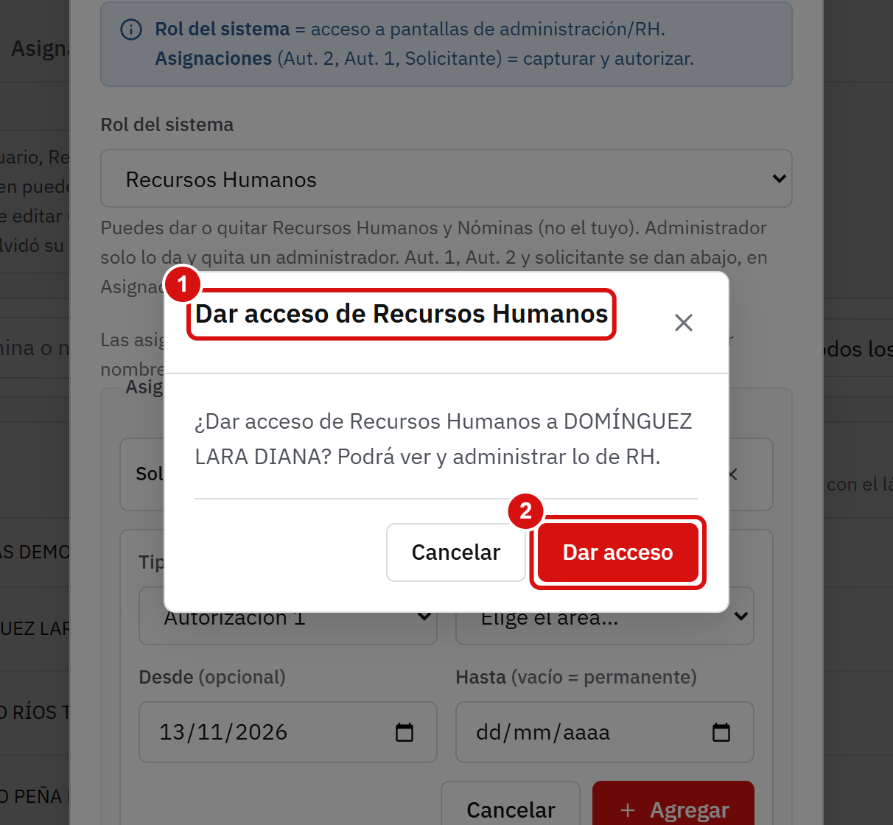
Lee la pregunta: dice a quién y qué acceso.
Toca Dar acceso (al quitarlo, el botón cambia de texto). Queda en la bitácora con tu nombre.
Lo que NO puedes hacer
Cambiar tu propio rol, o darte a ti mismo el rol de Nóminas.
Cambiar el nombre o el estado de alguien que ya es RH o Nóminas: solo le cambias el rol.
Dar o quitar Administrador: solo un administrador.
Una cuenta con rol «Usuario» y solo una asignación de Autorización 2 no ve nada de RH. Si esa persona además es de Recursos Humanos, cámbiale el rol del sistema a Recursos Humanos.
13. Restablecer una contraseña y desactivar
Para qué sirve. Una persona olvidó su contraseña o la bloqueó. Cuándo se usa: cuando alguien llega a pedirlo.
Antes de restablecer, verifica a la persona en persona, con su identificación. Nunca restablezcas por teléfono, correo o mensaje: cualquiera podría hacerse pasar por ella.
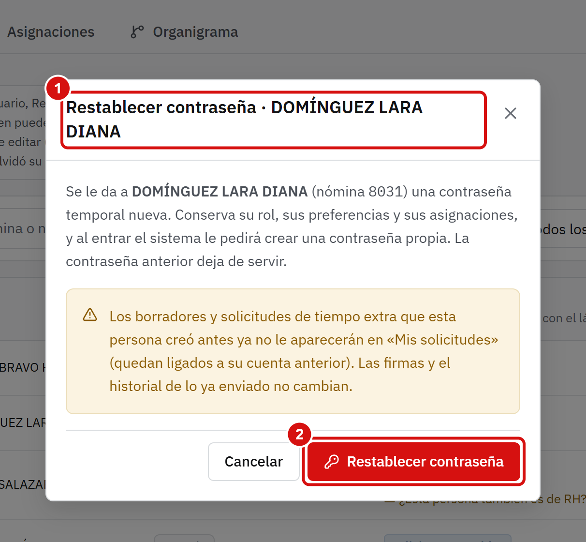
En la fila de la persona, toca la llave 🔑.
Toca Restablecer contraseña.
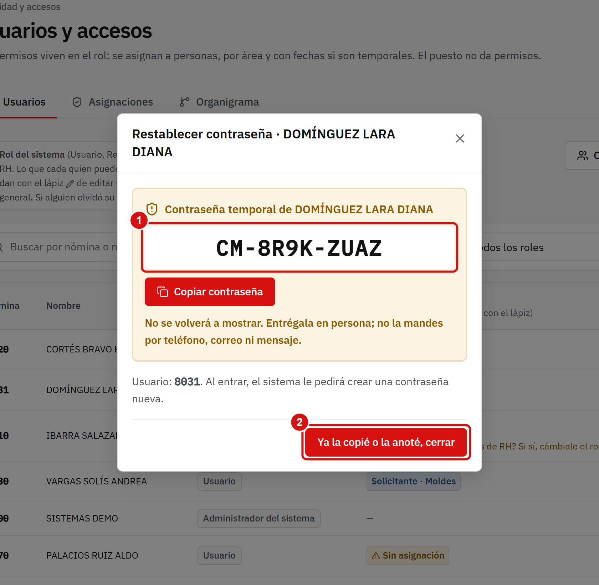
Esta es la nueva contraseña temporal, que se ve una sola vez.
Toca Ya la copié o la anoté, cerrar cuando la hayas copiado.
Qué pasa después. La persona entra con la contraseña temporal y el portal le pide crear una nueva. Conserva su rol y sus asignaciones.
Al restablecer, los borradores y solicitudes que la persona creó con su sesión anterior pueden dejar de aparecerle en «Mis solicitudes». Avísale y, si hace falta, pide a Recursos Humanos que revise.
Lo que NO puedes hacer
Restablecer la contraseña de un Recursos Humanos o de un administrador (lo hace un administrador).
Restablecer tu propia contraseña: usa Mi cuenta › Cambiar mi contraseña.
Desactivar a alguien
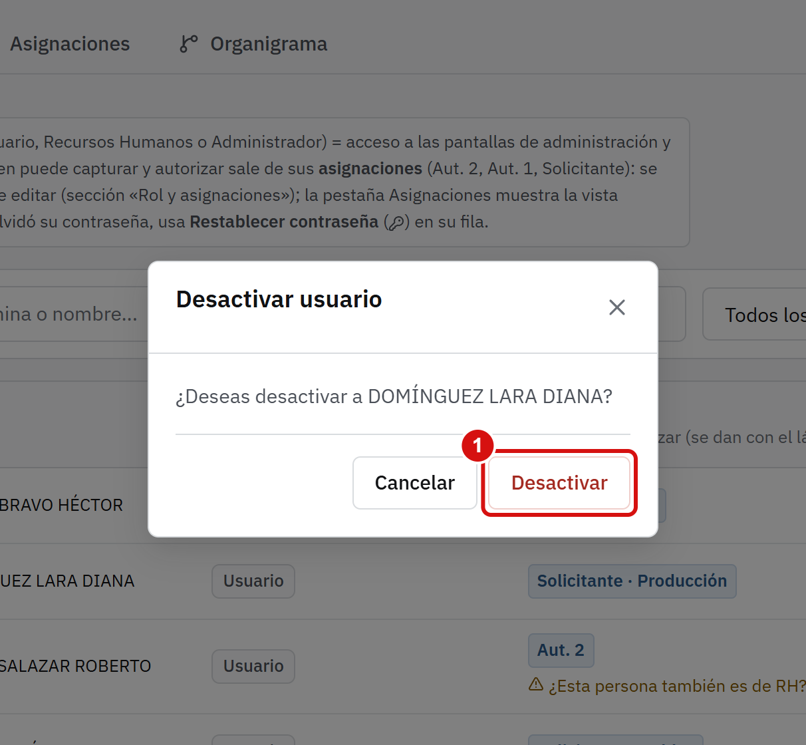
El ojo desactiva a la persona: ya no podrá entrar, pero conserva su historial y sus datos. El mismo botón la vuelve a activar.
Desactiva a quien deja la empresa o ya no debe tener acceso.
14. Asignar roles (pestaña Asignaciones)
Para qué sirve. Ver de un vistazo quién tiene qué permiso, en qué área y hasta cuándo, y dar uno nuevo sin buscar a la persona en Usuarios. Cuándo se usa: para suplencias y cambios de jefe de área.
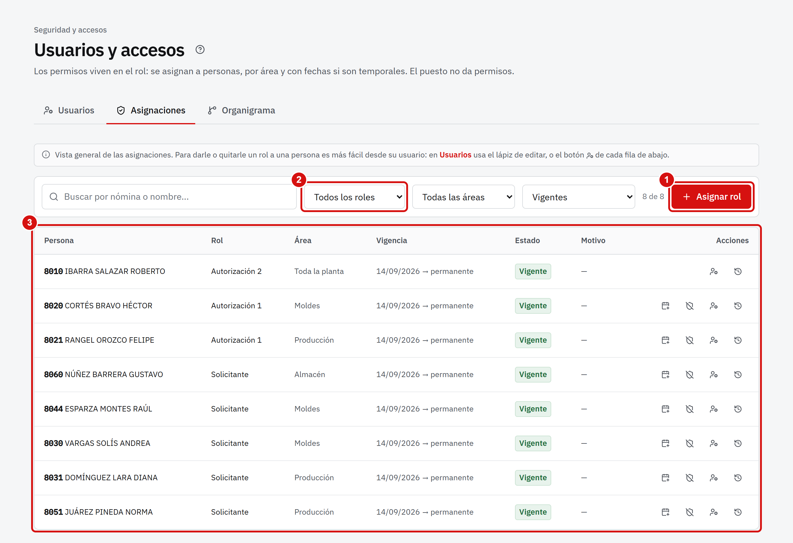
Asignar rol abre el formulario.
Los filtros de rol, área y estado (Vigentes, Programadas, Vencidas, Revocadas).
La tabla: persona, rol, área, vigencia, estado, motivo y acciones.
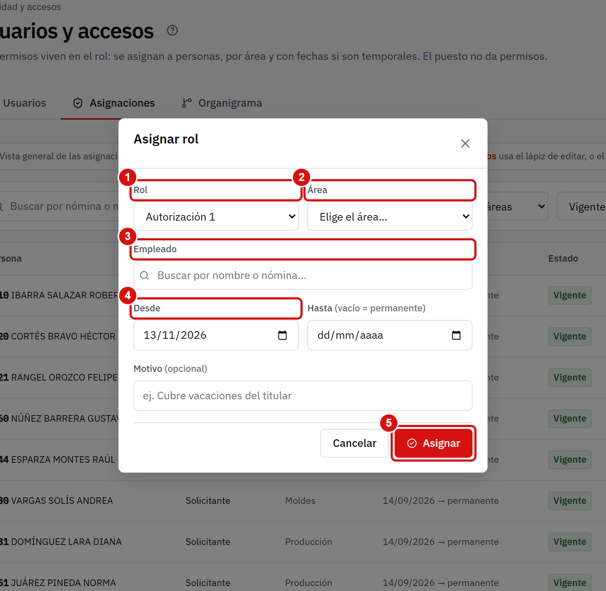
Rol: Autorización 1 o Solicitante.
Área.
Empleado: la persona, buscada en el padrón.
Desde (y Hasta, vacío = permanente). Motivo opcional.
Asignar.
En cada renglón puedes extender la vigencia (si la suplencia se alarga) o revocar el permiso. Todo queda en la bitácora.
Las asignaciones tienen estado: Programada (empieza después), Vigente, Vencida (ya terminó) y Revocada. Una asignación vencida o revocada ya no da permisos.
15. Organigrama
Para qué sirve. Ver quién autoriza y quién captura en cada área, y detectar áreas sin autorizador. Cuándo se usa: al revisar quién cubre qué.
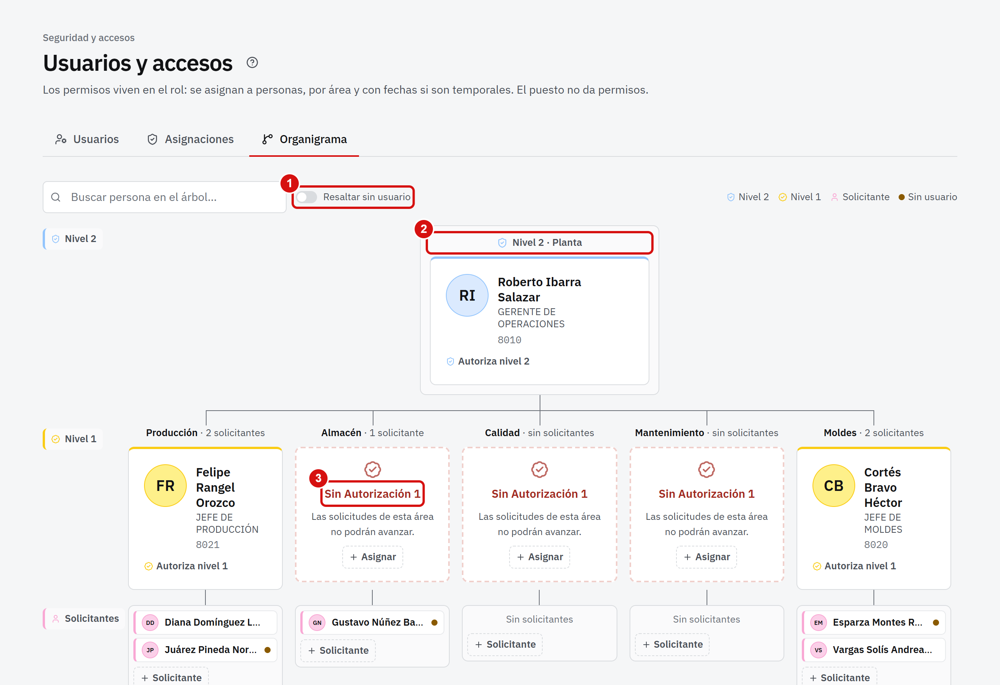
Resaltar sin usuario marca a quien está en el padrón pero aún no tiene usuario.
Nivel 2 · Planta: quien firma en el nivel 2.
Cada área muestra su Autorización 1 y sus solicitantes. Si falta uno dice Sin Autorización 1 («las solicitudes de esta área no podrán avanzar») y trae un botón Asignar.
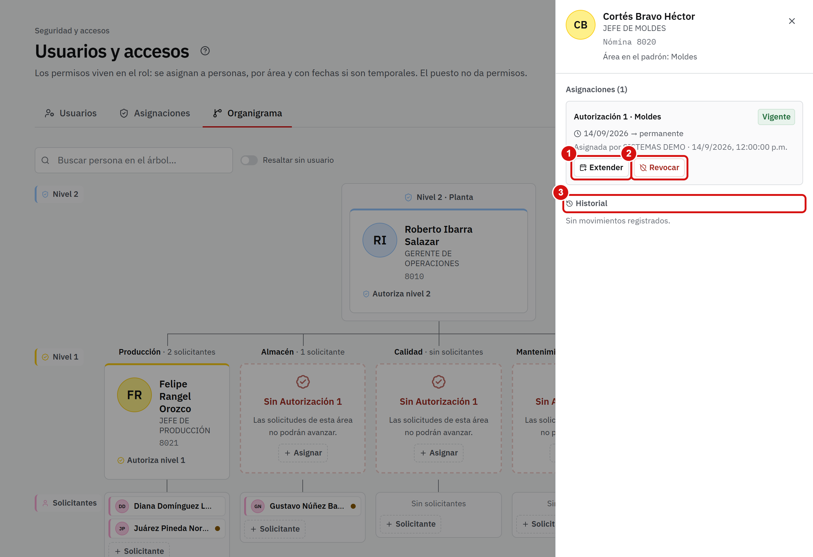
Al tocar a una persona se abre su ficha: sus asignaciones, con vigencia y quién las dio. Extender alarga la vigencia.
Revocar la quita.
Historial: todo lo que se ha hecho con sus permisos.
16. Personal elegible para tiempo extra
Para qué sirve. Consultar a quién se le puede capturar tiempo extra (los «elegibles»). Es solo consulta. Se entra desde Personal de planta › Ver lista en tu Inicio.
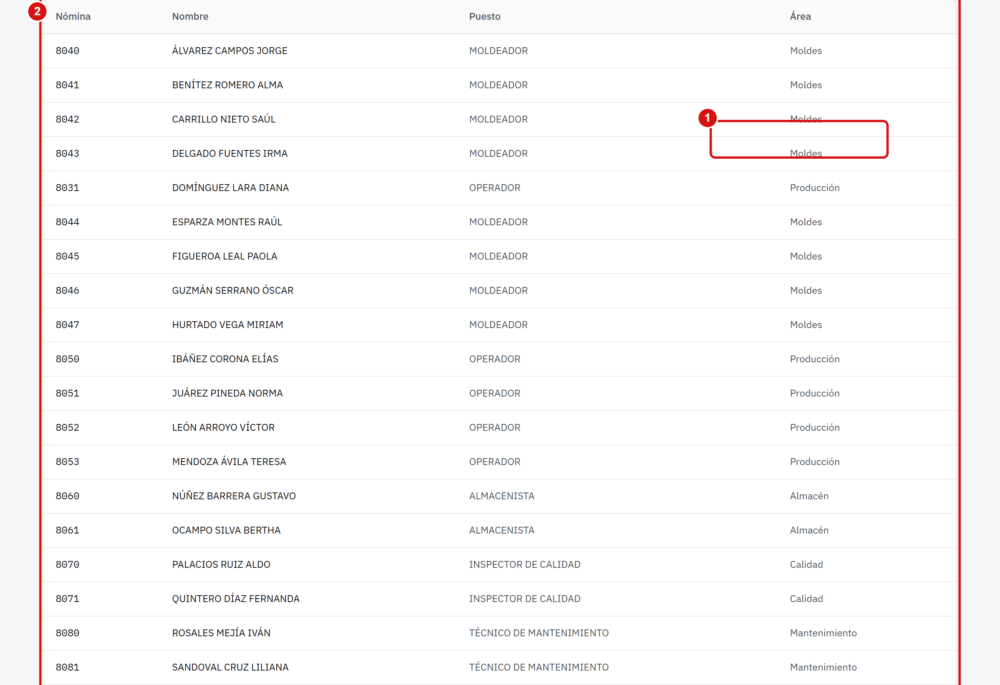
Filtra por área.
La tabla trae nómina, nombre, puesto y área.
Si alguien no sale aquí, es porque no está activo o no está marcado como elegible en el padrón (supervisores, jefes y administrativos normalmente no lo están). Recursos Humanos lo corrige en Personal.
17. Casos especiales
Autoricé por error
Una firma no se deshace. Pide a Recursos Humanos que devuelva la solicitud (para corregirla) o la cancele con un motivo, y que lo haga antes de confirmarla al proveedor. Si ya se confirmó, RH la cancela y avisa al proveedor por su cuenta: la aplicación no avisa al proveedor.
Una solicitud que debería estar no aparece en mi bandeja
Solo te llegan las que ya firmó el jefe de área. Búscala en Todas las solicitudes: te dice en qué nivel está.
Si no la ves ahí, es un borrador (solo lo ve quien lo está armando).
Si tú la creaste, no la firmas: se autorizó sola al enviarla.
Si el área no tiene Autorizador 1, la solicitud no avanza: míralo en el Organigrama («Sin Autorización 1») y asigna a alguien.
No encuentro a un empleado
Al crear un usuario: solo salen empleados activos y sin usuario. Si no sale, ya tiene usuario (búscalo en la lista) o no está en el padrón: usa «Capturar a mano» y avisa a Recursos Humanos.
Al capturar tiempo extra: solo salen los elegibles de esa área. Revisa la Lista del personal elegible; si falta, Recursos Humanos lo marca como elegible en Personal.
La semana ya estaba firmada en Nóminas
Si autorizas fuera de tiempo algo de una semana que Nóminas ya firmó, el portal te avisa antes de confirmar. La solicitud queda autorizada, pero no se agrega sola al formato firmado. Avisa a Recursos Humanos: ellos pueden reabrir el área para que Nóminas la corrija y la firme de nuevo.
Una persona también es de Recursos Humanos
Con rol «Usuario» y una asignación de Autorización 2, no ve nada de RH. Edítala con el lápiz y cambia su Rol del sistema a Recursos Humanos.
Dos personas respondieron lo mismo
El portal no deja firmar dos veces. Al que llega segundo le avisa «Alguien más ya respondió esta solicitud» y no se cambia nada.
El proveedor no recibió a alguien
La aplicación no avisa al proveedor por sí sola; quien manda el Formato de rutas es Recursos Humanos. Si te reportan que alguien no fue recogido, pide a Recursos Humanos que revise en el portal que la solicitud estaba confirmada y que la persona sale en el Formato de rutas del día correcto (ojo con los horarios que cruzan la medianoche: van al día siguiente), con su ruta, comunidad, punto de reunión y teléfono. Tú puedes comprobar en Todas las solicitudes › Ver que la persona estaba en la solicitud y con transporte.
18. Preguntas frecuentes
¿Puedo firmar mi propia solicitud?No hace falta: lo que capturas queda autorizado al enviarlo. Lo que no puedes es firmar, en el nivel de revisión, algo que tú creaste.
¿Puedo devolver una solicitud que ya autoricé?No desde tu bandeja. Pide a Recursos Humanos que la devuelva (nivel 3) o la cancele.
¿Por qué no veo «Por enviar al proveedor» ni el Formato de rutas?Son de Recursos Humanos y Nóminas. Tu trabajo termina al autorizar.
¿Puedo darle a alguien el rol de Autorización 2?No. Solo un administrador. Tú sí puedes dar Autorización 1, Solicitante, Recursos Humanos y Nóminas.
Creé un usuario y cerré sin copiar la contraseña.No se puede volver a ver. Restablece la contraseña de esa persona y entrega la nueva en persona.
Alguien olvidó su contraseña y está lejos.Solo se restablece en persona. Nunca la des por teléfono ni por mensaje, aunque suene urgente.
¿Cómo sé quién cambió un permiso?En el Organigrama, al tocar a una persona, su Historial muestra cada alta, cambio y baja con su autor y su fecha.
Se cerró mi sesión.Por seguridad se cierra a los 30 minutos sin usar. Entra de nuevo; lo ya firmado no se pierde.
19. Qué significa cada estatus
Así se ve cada estatus y qué haces tú con él:
Estatus
Qué significa
Qué haces tú
Borrador
Alguien la guardó y todavía no la envía. Solo la ve quien la armó (tú ves solo tus propios borradores).
Si es tuyo: Continuar para enviarla. Si es de otra persona, no la ves ni la puedes firmar.
En autorización (nivel 1)
Espera la firma del jefe de su área (Autorización 1).
Nada. Solo la ves en Todas las solicitudes. Si ya venció, pasa a Vencidas y tú puedes autorizarla fuera de tiempo.
En autorización (nivel 2)
Ya la firmó el jefe de área. Espera tu firma.
Está en Por autorizar: Autorizar o Devolver.
Devuelta
Alguien pidió que se corrija; regresó a quien la capturó.
Nada. Avisa a quien la capturó. Al reenviarla vuelve a empezar desde el nivel 1.
Autorizada
Tiene las firmas necesarias. Recursos Humanos la confirmará y pedirá el transporte.
Nada. Si fue un error, pide a Recursos Humanos que la devuelva o la cancele antes de confirmarla.
Confirmada por RH
Recursos Humanos ya la confirmó y generó su solicitud de transporte.
Nada.
Vencida
Pasó el día del tiempo extra sin terminar de autorizarse.
En Vencidas: Autorizar fuera de tiempo con un motivo, si de verdad se trabajó. Las borradores y devueltas vencidas no: se duplican con otra fecha.